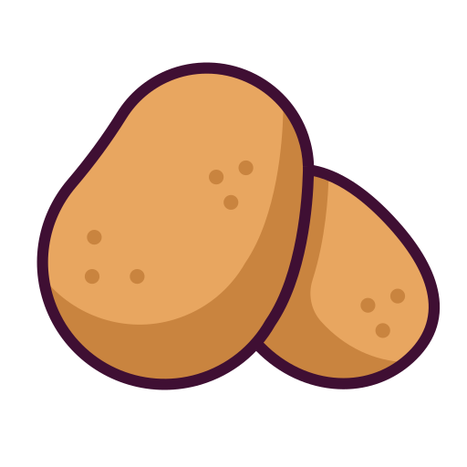
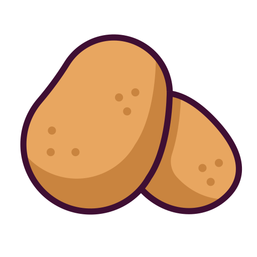
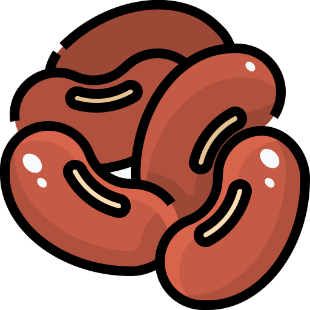
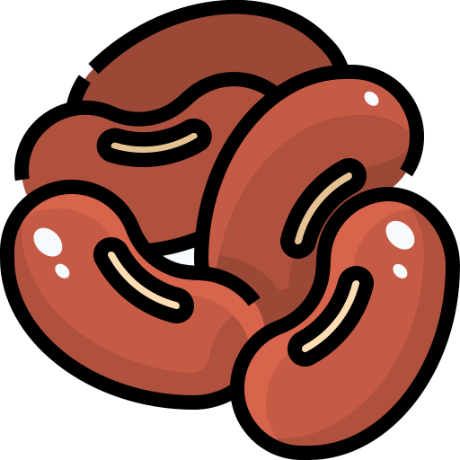

BOTSWANA
- Botswana is located in southern Africa.
- Botswana has a rich history shaped by resilience and independence. Originally inhabited by hunter-gatherer communities, the region was home to the San people (Bushmen) and later the Bantu-speaking Tswana tribes, who migrated into the area around 1000 AD. These groups established the foundations of modern Botswana through strong tribal structures. In the late 19th century, faced with the threat of annexation by South Africa, Botswana’s leaders, including King Khama III, sought protection from the British. This led to the formation of the Bechuanaland Protectorate in 1885, which remained under British rule until Botswana peacefully gained independence in 1966. Under the leadership of its first president, Sir Seretse Khama, Botswana embraced democratic governance, stability, and rapid economic growth, driven by the discovery of diamonds. Today, Botswana is recognized for its democratic traditions, commitment to conservation, and strong economy, making it a standout success story in Africa.
- Morocco is renowned for its diverse and vibrant tourist attractions, offering a blend of natural beauty, historic sites, and cultural experiences. Marrakech: Known for its bustling souks, historic palaces, and the vibrant Jemaa el-Fnaa square, Marrakech is a lively city where visitors can experience Moroccan culture up close.
-
Fun Fact
The top tourist attraction in Botswana is the Okavango Delta, one of the world's largest inland deltas and a UNESCO World Heritage site. This unique ecosystem is renowned for its stunning natural beauty and incredible biodiversity. The delta is formed by the seasonal flooding of the Okavango River, creating a lush habitat that supports a wide variety of wildlife, including elephants, lions, hippos, and countless bird species. Visitors can explore the delta by traditional mokoro (dugout canoe), on guided safaris, or by walking tours, offering opportunities to experience the rich flora and fauna up close. The Okavango Delta is not only a paradise for nature lovers and wildlife enthusiasts but also a vital area for conservation, making it a must-visit destination for anyone traveling to Botswana.
Location
History
Tourist Attraction
Botswanas Flavours
Botswana's cultural food history is deeply rooted in traditional African practices, shaped by its indigenous Bantu heritage and agricultural lifestyle. The cuisine largely revolves around staple foods like sorghum, maize, and millet, with beef being particularly prized due to the country's rich cattle-rearing traditions. Botswana’s culinary influences also reflect regional exchanges with neighbouring countries like South Africa and Zimbabwe, blending flavours and ingredients such as beans, peanuts, and wild spinach into the local diet.
The Must Try Dish I Discovered in Botswana
Seswa
Seswaa, also known as chotlho, is Botswana's national dish consisting of meat on the bone (usually beef) that's slow-cooked in salted water. Once the meat has been cooked, it is pounded with large wooden pestles, then served over pap. Seswaa is usually prepared by men due to the physical extortion during the preparation process, since the meat is cooked in traditional, three-legged pots (called potjie) over an open fire. Lamb or goat meat can be used instead of beef, although beef is the most popular option in Botswana. Seswaa is almost always served on special occasions, weddings, and during the country's celebration of the Independence Day.


 

 
